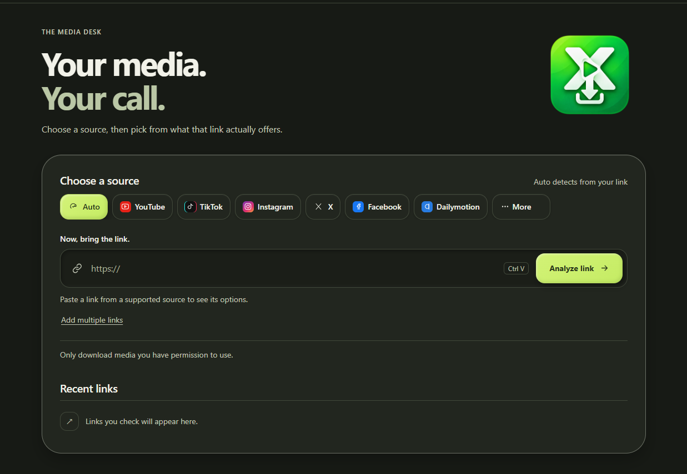
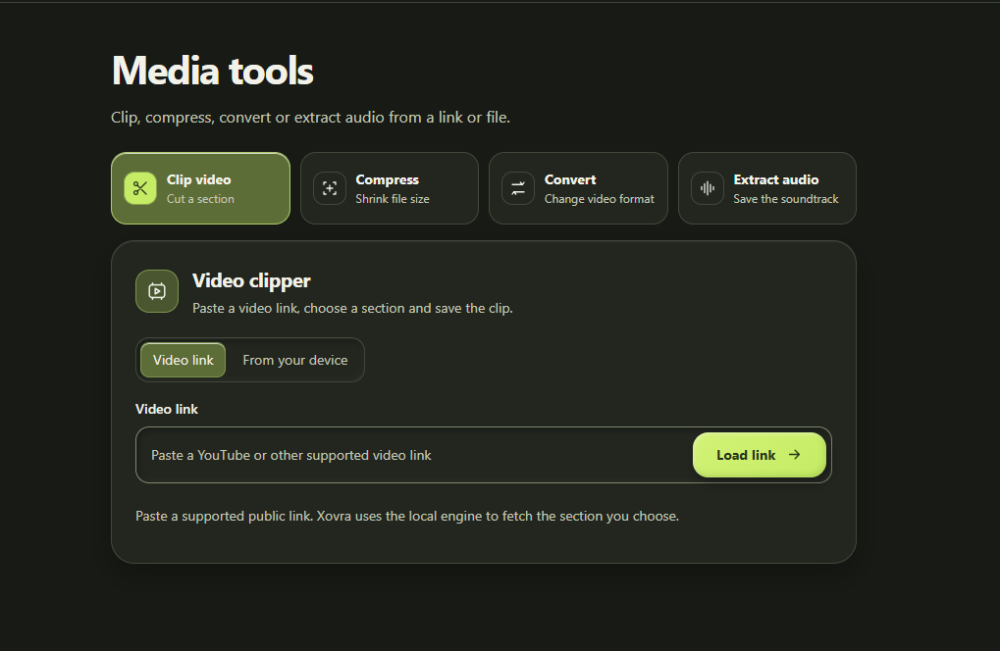

Pick from available formats
Analyze a supported link and choose an available video or audio format.
Download, clip, convert, and extract audio from supported links and files—all from one desktop workspace.

Start with a supported public link or a file on your computer. Pick the tool that gets you where you need to go.

Use a supported link or a local file, choose the segment, and save your clip.
Keep the practical tools close instead of opening another app for every step.
Analyze a supported link and choose an available video or audio format.
Set the section you want from a link or a file on your device.
Change video format or make a smaller copy with the local engine.
Extract audio as MP3, M4A, Opus, WAV, or FLAC.
Xovra processes links and files on your computer. It does not send your media through an Xovra server. The desktop installers include the media engine.
Start with a supported public link or a file you already have.
Paste a supported URL or select a file from your computer.
Choose a format, a clip, a conversion, or an audio export.
Save the finished media on your device.
Choose the package for your system on the latest release page.
Branded setup installer. Windows may show a publisher warning while the app is unsigned.
See Windows downloadsInstall the package for Debian, Ubuntu, and other .deb-based distributions.
See .deb downloadInstall the package for Fedora and other RPM-based distributions.
See .rpm downloadOnly download media you have permission to use. Xovra does not bypass private access or DRM.